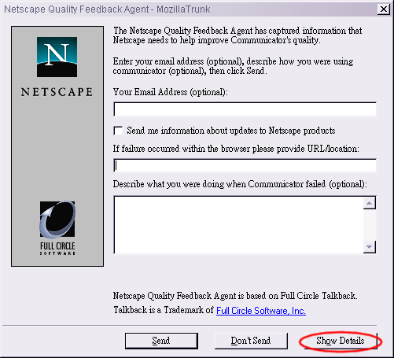

Quality Feedback Agent
Quality Feedback Agent is a small piece of software embedded in Mozilla that gathers data about what is happening in Mozilla when it crashes. Such information helps Mozilla developers to quickly isolate the cause of a crash and then correct it. Reporting crash data is one of many ways in which users can help improve the quality of the software. Participation is not required but highly recommended.
Where is the crash data sent?
Data is no longer sent to Netscape. Do not be fooled by the old artwork :) The data is sent to a Mozilla Foundation server. Quality Feedback Agent is a commercial program licensed to the Mozilla Foundation by SupportSoft (formerly Full Circle Software).
The software is not a spyware. Quality Feedback Agent does not monitor your computer use; it is activated only when Mozilla crashes. Information collected is limited to information about the state of Mozilla when it crashes. Sensitive data, such as passwords, Web sites visited, and e-mail addresses will not be collected.
Full Circle Software is not affiliated to AOL or Netscape.
Using Quality Feedback Agent
When your Mozilla crashes, there is a good chance that other people experience the same crash. For that reason, Talkback-enabled builds allow you to essentially "talk back" to the developers.
When Mozilla crashes, Quality Feedback Agent prompts you for information about the crash as well as collecting crash information. To see what crash information is collected, click the Show Details button.

If you feel that any of the crash data collected is an invasion of privacy, feel free to uncheck that item. If the item you wish to uncheck is disabled, then feel free to not send the report by clicking Don't Send. However, this may mean that your crash may not be fixed as quickly.
Among the items collected which may be considered privacy or security invasions are:
- User Name
- Process List
- Application Launch Counter
- Computer Name
Using Quality Feedback Agent with Automatic Proxy Configuration
On Windows, if you are using automatic proxy configuration,
you need to replace the talkback.ini file with one that
contains the appropriate proxy configuration information. Follow
these steps to do so:
-
If you are using an HTTP proxy, or both an HTTP and SOCKS proxy, create a file named
talkback.ini, containing the following three lines, using your proxy host name, domain, and port:UseUserHTTPProxyInfo=1 UserHTTPProxyHost="yourproxy.yourdomain.com" UserHTTPProxyPort=xxxx
where xxxx is your proxy port number.
If you are using a SOCKS Proxy, create a file with these three lines:
UseUserSOCKSInfo=1 UserSOCKSHost="yourproxy.yourdomain.com" UserSOCKSPort=xxxx
where xxxx is your SOCKS port number.
- Replace the existing talkback.ini file with the version you created.
On Windows 95 and Windows NT systems, copy the talkback.ini file to the following
directory location within the directory that contains the Mozilla.exe file:
\Fullsoft\data\talkback.ini